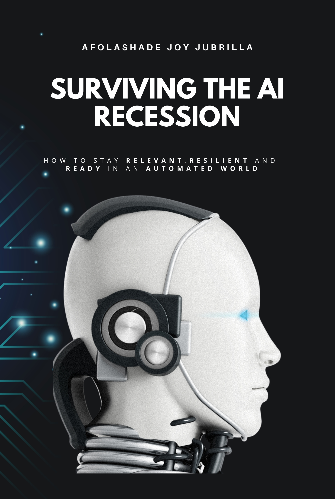

Published · 2025
How to Stay Relevant, Resilient, and Ready in an Automated World
We are living through a defining shift — powered by Artificial Intelligence and automation. This book reveals how you can stay ahead of disruption rather than being swept away by it. Afolashade Joy Jubrilla breaks down how AI is reshaping economies, work, and opportunity — and shows why fear of job loss is often fuelled by the same tech leaders who profit from it.
With practical lessons from past recessions and actionable strategies for personal and business reinvention, this book helps readers transform uncertainty into direction.
"The future doesn't belong to the fearful — it belongs to the prepared."— Afolashade Joy Jubrilla, Surviving the AI Recession
What You'll Learn
Understand what's actually driving the AI disruption narrative — and who profits from keeping workers afraid. Context changes everything.
Practical, tested frameworks for reinventing your skills and positioning for relevance — drawn from operational experience across banking, governance, and technology.
How to think, adapt, and lead in an era of intelligent disruption — building on what makes us irreplaceably human, not racing against the machine.
Reader Reviews
About the Author
Afolashade Joy Jubrilla is a governance, compliance, and cybersecurity professional based in the Netherlands. Drawing on years of experience in operations, compliance, and business strategy, she brings a practical perspective to how technology reshapes organisations. Her work focuses on helping teams simplify complexity, reduce risk, and build systems that thrive through disruption.
She holds an MBA from Ladoke Akintola University of Technology and a Master's in Governance and Development Policy from ISS Erasmus University, The Hague. Passionate about human-centered innovation, she writes to help people see that relevance in the AI age isn't about competing with technology, but about amplifying what makes us human.